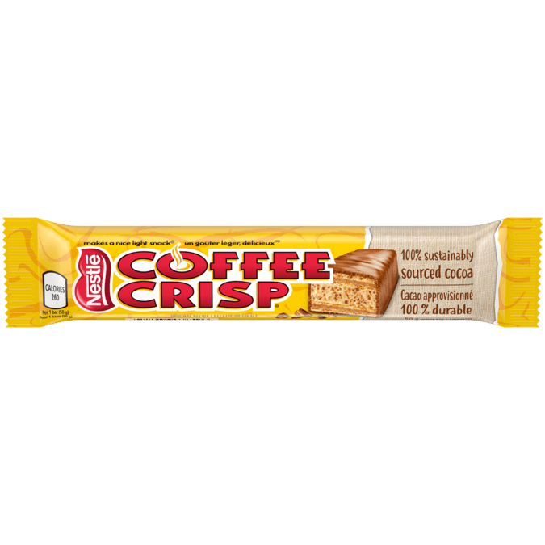
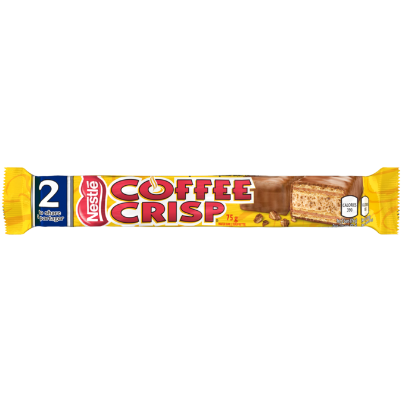
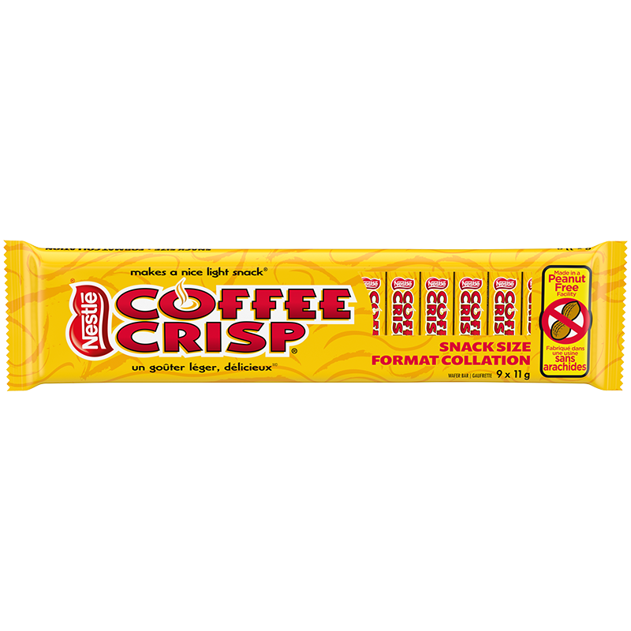

Introduction
Discover the delightful blend of coffee and chocolate in every delicious bite of Coffee Crisp. This iconic chocolate bar combines light wafers with a coffee flavored filling, all coated in a smooth milk chocolate.
Did You Know?
- Coffee Crisp has been a favorite in Canada since its introduction in 1938, offering a delicious blend of coffee flavored filling and crispy wafer.
- The iconic candy bar was originally part of a series that included fruit-flavored variants, but the coffee version became so popular that it outlasted the others.
- Despite its coffee flavor, Coffee Crisp does not contain any actual coffee, making it a caffeine-free treat that can be enjoyed at any time of the day.
- In 2004, after a "Bring Coffee Crisp to the U.S.A." campaign gained momentum, Coffee Crisp was finally introduced to the American market for a limited time.
- Coffee Crisp makes a nice light snack, a tagline that has resonated with fans for decades, emphasizing the bar's light, airy texture that contrasts with the richness of its flavor.
- Over the years, Coffee Crisp has seen various limited edition flavors, including French Vanilla, Mocha, and even a Maple flavor, showcasing the brand's willingness to experiment and cater to diverse tastes.
Standard Coffee Crisp Sizes
  Nutritional Information
50g Bar
Nutritional facts per serving (50g): Calories 260, Fat 12g, Carbohydrates 34g, Protein 3g.
75g Bar
Nutritional facts per 2 bars (75g): Calories 390, Fat 20g, Carbohydrates 50g, Protein 4g.
Junior 11g Bar
Nutritional facts per 4 bars (44g): Calories 220, Fat 11g, Carbohydrates 29g, Protein 2g.